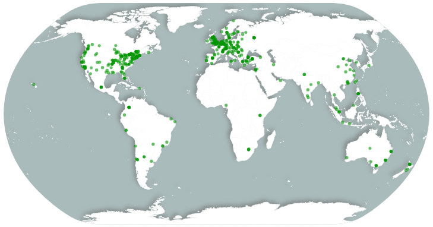

The PSA Calls for Rapid and Impactful Study Proposals on COVID-19
Purpose of this call
The Psychological Science Accelerator (PSA) is the largest consortium of research psychologists in the world. Behavioral scientists can play an important role in combating the growing COVID-19 pandemic if we quickly take action to collect high-quality data from large, global samples. The PSA wants to team up with researchers working on important questions related to this pandemic.
Scope of study proposals
We are soliciting proposals for studies that can be conducted online. Studies should be relatively easy to conduct. We are only interested in applied, not basic, research. Research proposals from multi-disciplinary teams (e.g., health researchers, psychologists, and data scientists) will be prioritized. Proposals should not exceed 1 page. This one page should include the basic research question, (very briefly) the relevant literature, identify whether the research is exploratory or confirmatory, and how the research will contribute to reducing the effects of the current crisis. If confirmatory, the researchers should clearly identify the hypothesis/hypotheses and the needed sample size for answering their research question. If exploratory, the researchers should identify how data will be used to generate hypotheses. In addition, if exploratory, the researchers will have to identify how they will use methods including - but not limited to - cross-validation for greater certainty about the generated ideas. If feasible and volunteers are available, the network may be able to assist with translation into the major world languages. However, if you need your study conducted in multiple languages, we encourage you to have a translation plan in place.
What we’re offering
We are offering to share study proposals to the PSA network in order to connect interested and available collaborators to high-quality projects concerning COVID-19. The PSA currently comprises over 700 researchers from labs in over 70 countries. Gorilla has also offered free use of their online experiment builder if it could be helpful for these project. 
What we’re not offering
Because this call for proposals is truly exceptional and is not going through the normal PSA study pipeline, we cannot guarantee the same levels of support standard PSA studies receive. In particular, we cannot guarantee a minimum number of collaborators or data collection labs, nor can we guarantee official support through our committee structure. Nevertheless, we will share the selected studies with our network, and we strongly suspect that PSA members may volunteer their time and expertise to help with aspects of your study (e.g., data management, analysis support).
The selection process
Proposals will be evaluated on a rolling basis, but should be submitted before Tuesday March 17, 2020, 5pm EST. Proposals will be initially screened by the Director and Associate Directors for feasibility and fit with the scope of this call. Studies that meet that threshold will be put to a rapid up-or-down vote (within 24 hours) from the entire network. All proposals that receive more upvotes than downvotes will be released to the network to pair collaborators with selected studies. At that point, any interested and capable PSA member that would like to join a project will be encouraged to do so.
Outlets
One of the potential outlets to publish for this call is Nature Human Behaviour, which has committed to efficient turnaround regarding papers concerning this crisis. Royal Society Open Science has also announced a rapid evaluation track for Registered Reports related to COVID-19. Researchers relying on our infrastructure will be required to post their work on a preprint server (like PsyArxiv) for quick dissemination.
How to submit
Send your proposals to Hans IJzerman (h.ijzerman@gmail.com), Charlie Ebersole (cebersole@virginia.edu), and our general PSA email address (psysciaccelerator@gmail.com). Please reach out to us if you have any questions about this call for proposals. These are frightening and uncertain times, but psychological scientists are well-positioned to conduct high-quality research into this growing pandemic, and our work can help indicate how the global community can best respond to it. We look forward to reading your ideas!